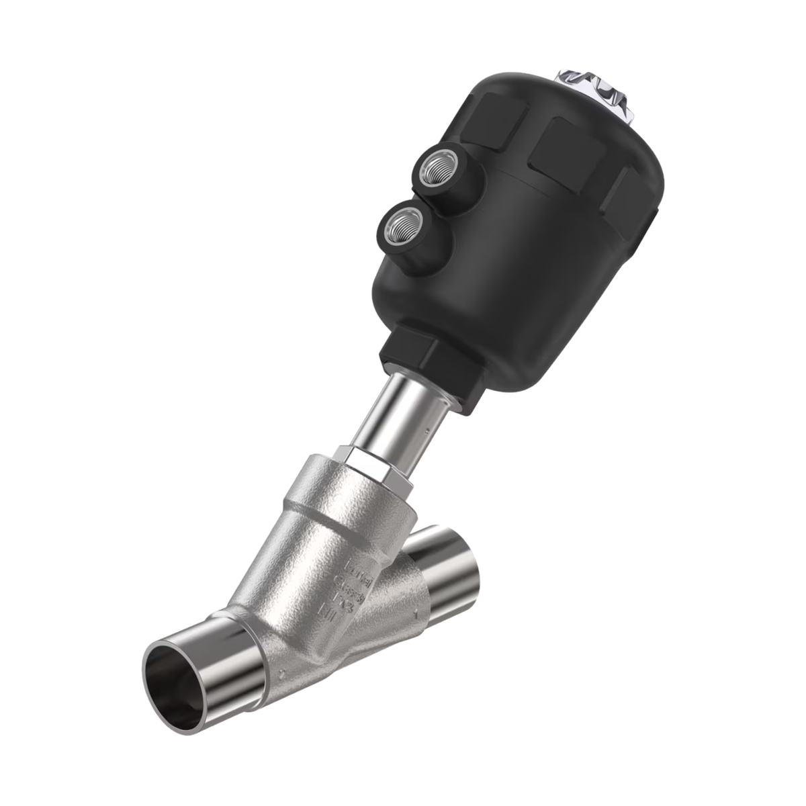
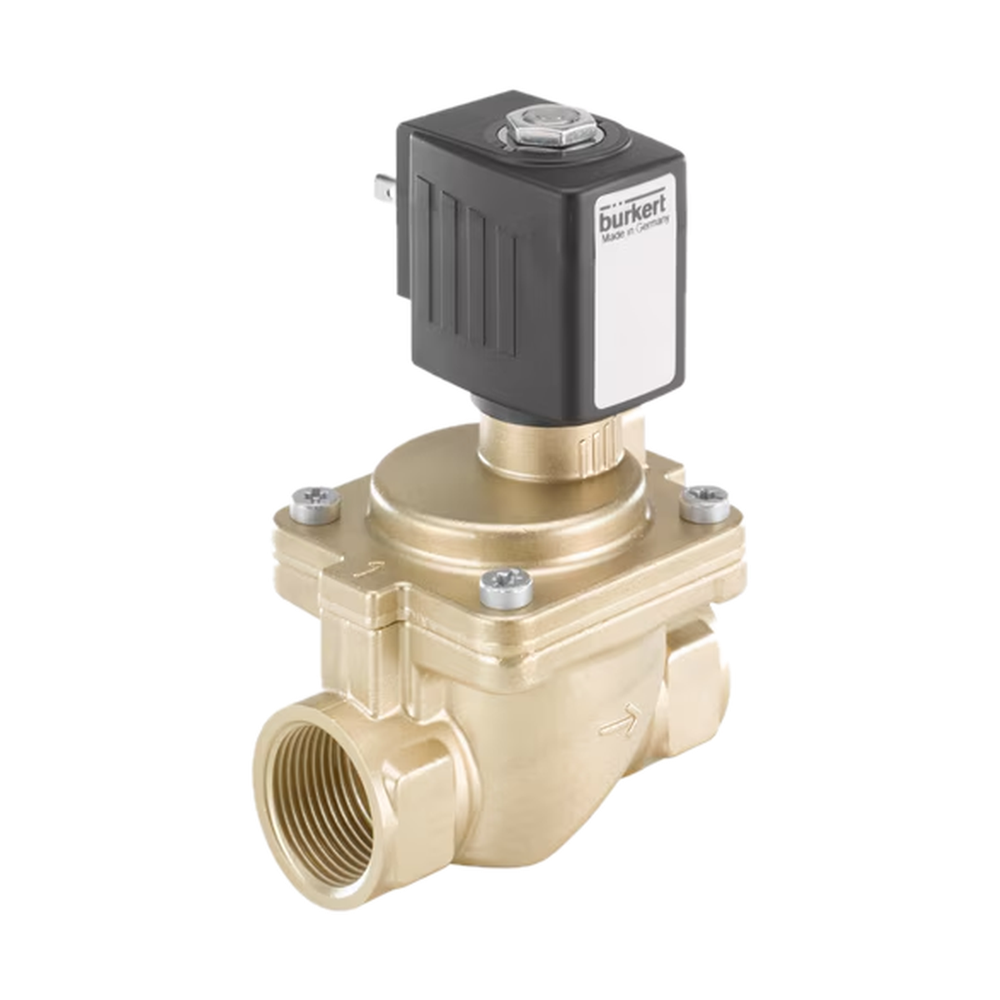
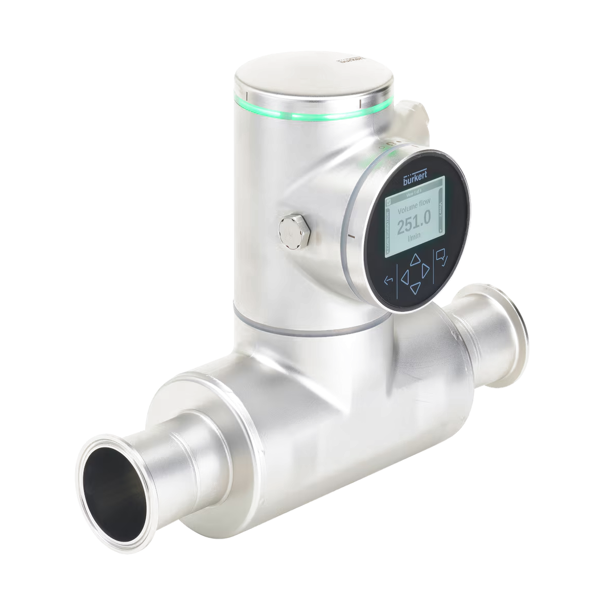
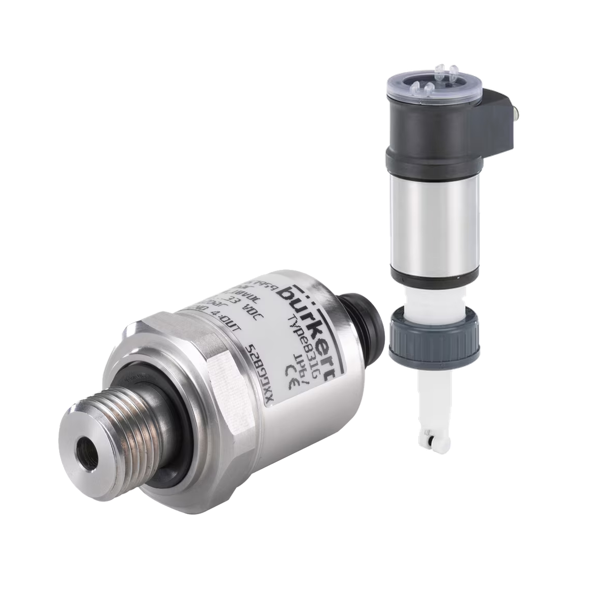
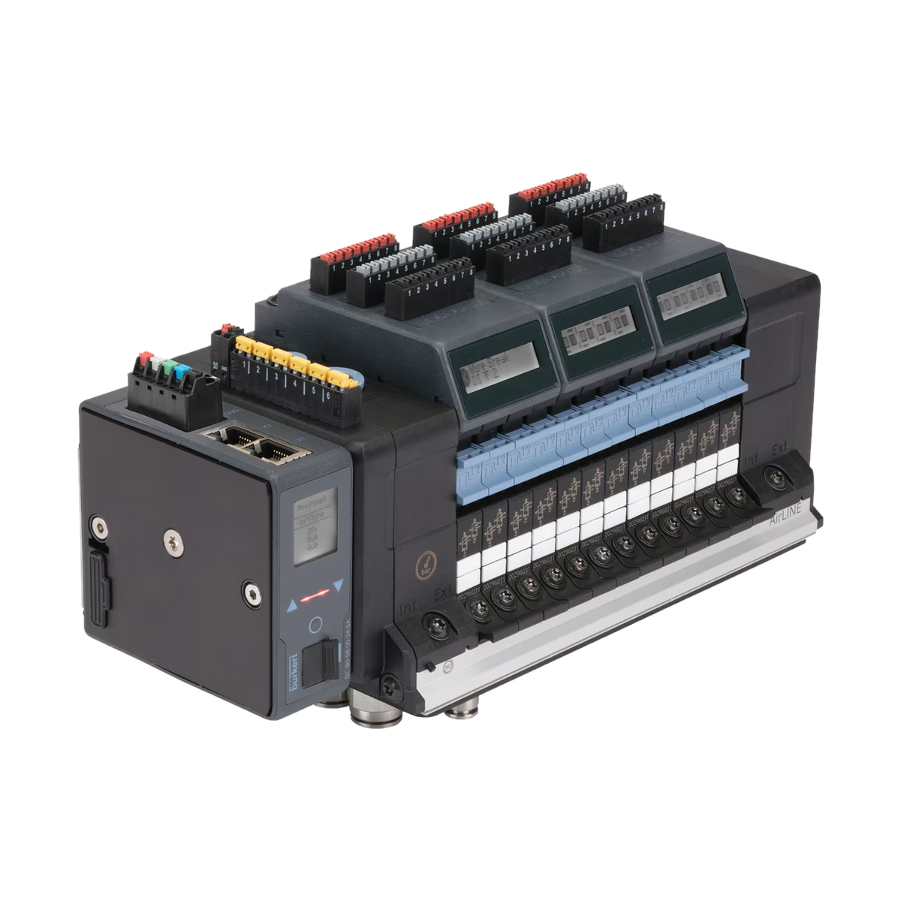
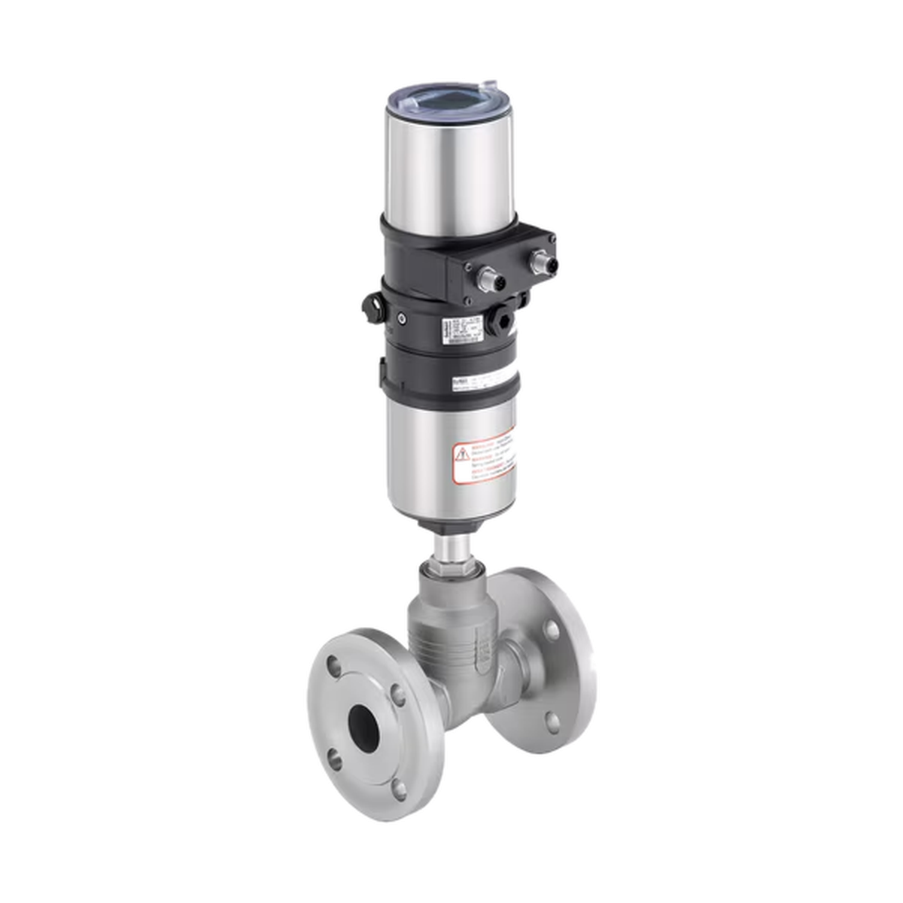

Znajdź właściwe rozwiązanie Bürkert dla swojej instalacji
Przejdź do katalogu produktów lub sprawdź główne grupy asortymentowe, aby szybciej odnaleźć rozwiązanie dopasowane do aplikacji.
Produkty i wsparcie techniczne w zakresie automatyki procesowej.
Pomoc w wyborze rozwiązań dostosowanych do rodzaju medium oraz parametrów procesu.
Zawory, pomiar, sterowanie i aparatura dla instalacji produkcyjnych.
Szybki kontakt do osoby odpowiedzialnej za Twój region.
Łączymy dostęp do produktów Bürkert z praktycznym wsparciem przy doborze armatury procesowej, automatyki i aparatury kontrolno-pomiarowej.
Dowiedz się więcej o firmieŁączymy dostęp do produktów Bürkert z praktycznym doradztwem, szybką analizą aplikacji i kontaktem z właściwym specjalistą.
specjalistów regionalnych
głównych grup produktowych
skupienia na doborze technicznym
Wybierz obszar, który najlepiej pasuje do Twojej aplikacji. Pełne zestawienie grup produktowych znajdziesz na podstronie Produkty.
Grzybkowe, membranowe, kulowe i klapowe do instalacji przemysłowych.
Zobacz grupę
Szybkie odcinanie i sterowanie przepływem cieczy, gazów i powietrza.
Zobacz grupę
Pomiar przepływu i kontrola parametrów procesu technologicznego.
Zobacz grupę
Elementy kontrolno-pomiarowe do monitorowania pracy instalacji.
Zobacz grupę
Rozwiązania do automatyzacji układów pneumatycznych i sterowania.
Zobacz grupę
Automatyzacja zaworów procesowych i integracja z instalacją.
Zobacz grupę
Wybierz podstawowe warunki aplikacji. Podpowiedź nie zastępuje doboru technicznego, ale pomaga skierować zapytanie do właściwej grupy produktów.
Dobre rozwiązanie do szybkiego odcinania przepływu cieczy lub powietrza.
Skonsultuj dobórMedium, ciśnienie, temperatura, przyłącza, środowisko pracy i oczekiwany efekt.
Sprawdzamy wymagania techniczne, materiałowe oraz sposób sterowania.
Wskazujemy właściwą grupę i kierunek doboru konkretnego modelu.
Pomagamy w kontakcie, dokumentacji i dalszej konsultacji technicznej.
Przejdź bezpośrednio do mapy przedstawicieli albo wyślij zapytanie przez formularz kontaktowy na dole podstrony Kontakt.